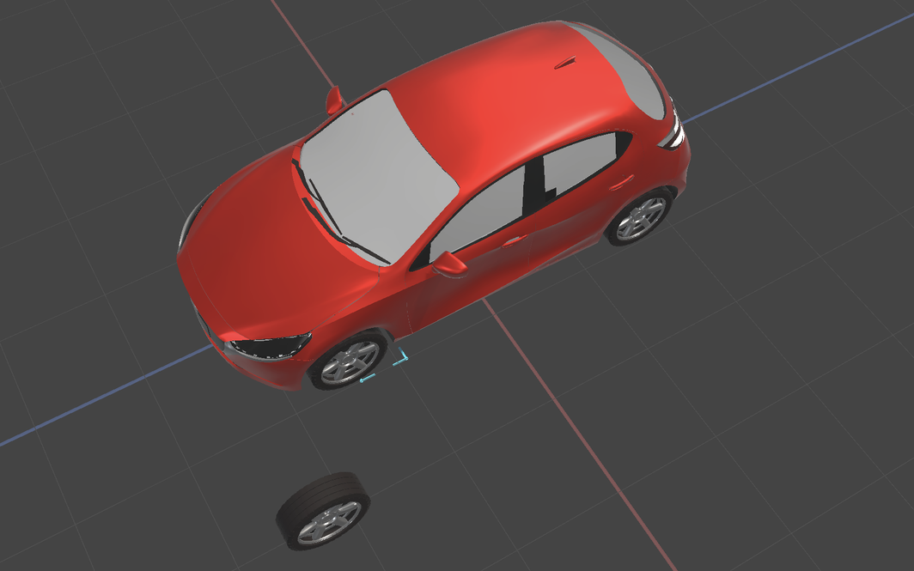

水津研究室の特別研究で、先生ご自身がVRの実習教材を作れるツールを開発しています。
つきましては、教材を作る立場にいらっしゃる先生方に、検証へのご協力をお願いしております。
VRの実習教材を使うと、学生は危険を伴う作業や設備の限られる作業を、安全に繰り返し練習できます。一方で、教材の作成や修正には専門的なプログラミングが必要なため、授業を担当する先生が内容を直接変えることは難しいのが現状です。
本研究では、部品を配置し、作業の手順と完了の条件を設定するだけで教材を作れるツールを開発しています。
今回の検証では、プログラミングの専門知識を要さずとも、少ない説明で教材を作成・修正できるかを確かめます。

自動車のタイヤ交換を題材に、ツールで教材を作成し、その一部を修正していただきます。
その後、使いやすさについてのアンケートにお答えいただきます。
なお、この検証はツールを評価するためのもので、先生の技能を評価するものではありません。
検証の結果は特別研究の論文と発表に使用し、先生のお名前は公表いたしません。
ご協力いただける場合は、ご都合のよろしい日時をTeamsのチャットでお知らせいただけますと幸いです。